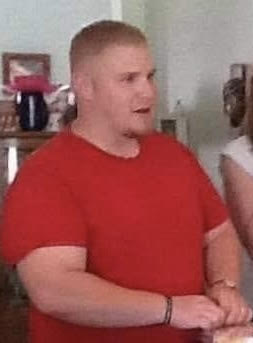

Cam Tomlin
Contact Me

Professional Summary
Results-oriented Sr. Technical support with a decade-long track record of exceptional customer service. A proven history includes
2 years as a Sr. Technical Support Engineer at Genesys Cloud and 1.5 years as a Tier 3 Technical support engineer for Microsoft
Azure. Holds a B.S. degree in Homeland Security and Applied Intelligence with a minor in Criminal Justice, conferred May 2018.
Self taught web developer. While I may not have a traditional computer science degree, my enthusiasm, dedication, and
hands-on experience in web development have fueled my desire to make a mark on the world wide web.
Education
Certifications
- Genesys Cloud CX: Developer Certification
- Genesys Cloud CX: Professional Certification
Skills
- Strong Communication skills
- Troubleshooting
- Strong Listening skills
- Cloud Computing
- API's
- Integrations
- Front End development
- Customer Service
- Salesforce
Work Experience
Genesys Cloud CX, Remote — Sr. Technical Support Engineer | 2021 - PRESENT
- Mitigating and troubleshooting customer technical issues while maintaining ownership end to end throughout the
case life cycle until resolution.
- Supporting, troubleshooting and assisting customer implementations utilizing Genesys specific APIs and SDKs
- Collaborating with multiple internal cross functional interfaces such as Product, Development, Success, Professional
Services, etc. to ensure effective resolution of customer escalation, feature requests, and product related issues
Tek Experts, Colorado Springs—Tier 3 Azure Technical Support Engineer/Team Trainer | 2020 - 2021
- Develop for training new hires
- Conduct team on boarding
- Maintain documentation for all cases including queries, process steps, and resolutions consistent with customer
commitments, prescribed protocols, and processes
Genesis Healthcare, Colorado Springs, CO — CNA | 2019 - 2020
- Recieved Certified Nursing Assistant Certification
- Help patient's with needs
Heritage Christan Services/Expressive Beginnings, Direct Support Staff/Preschool Teacher | 2019 - 2019
- Direct Support for people with disabilities
- Create/Execute lesson plans for preschoolers
Relin, Goldstein & Crane LLP, Lead Evictions Legal Assistant | 2018 - 2019
- Head of the Evictions Department
- Constant contact with sheriff departments and County Judges all around NY state
- Created affidavit's for attorney review
Custom Protection Officer/Security Guard | 2013 - 2018
- Guard and report suspicious activity to proper authorities
U.S. Army Combat Engineer | 2008 - 2013
- Went to Warrior Leader Course
- Performed various duties outlined by the Army